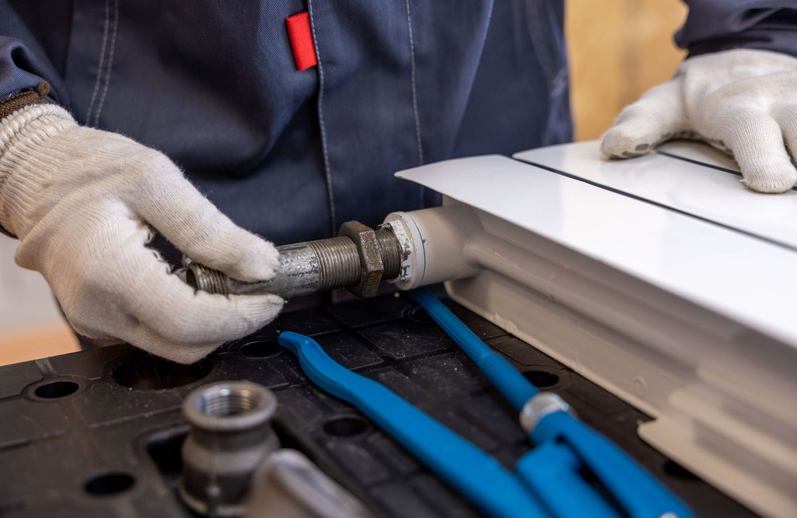

Specialty 01
Pipe Repair & Structural Re-Piping
We fix burst lines, corroded galvanized pipes, and pinhole copper leaks with permanent engineered solutions. Whether you need an emergency single-section splice or a complete whole-home PEX re-piping, our methods preserve your walls and maintain optimal flow.
Schedule Pipe Repair